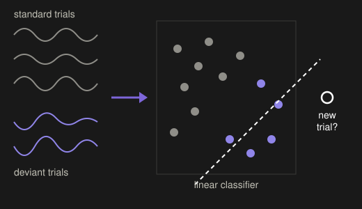
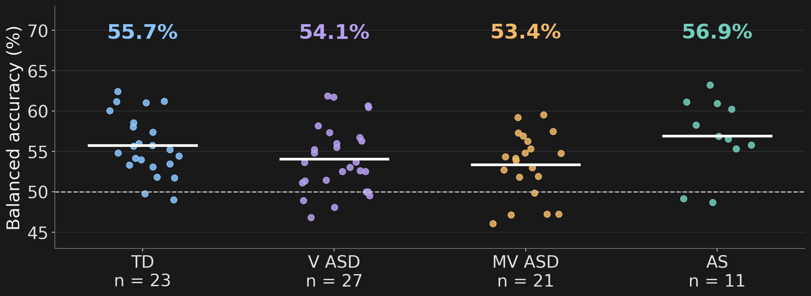
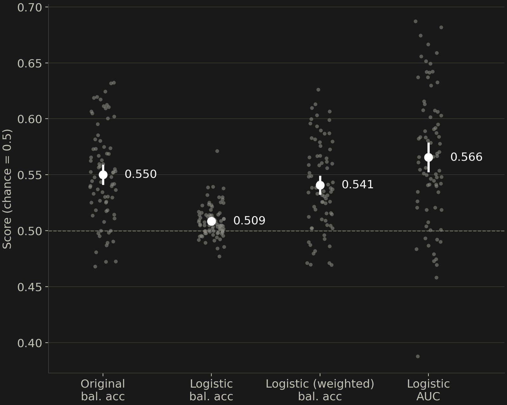
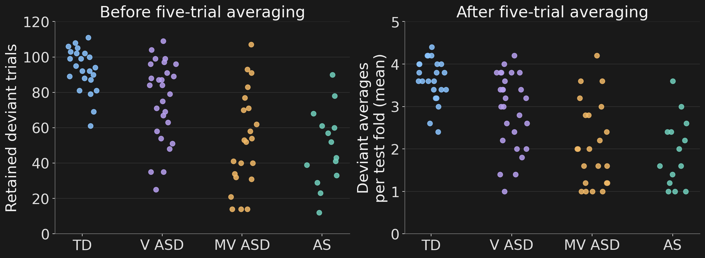
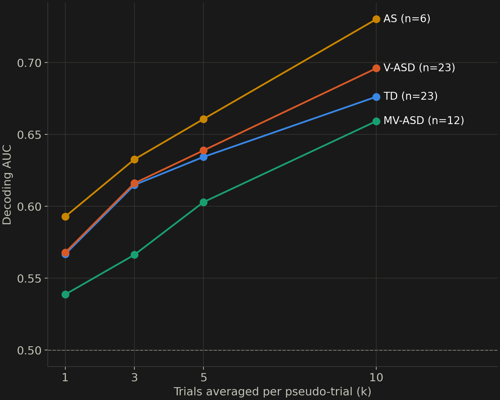
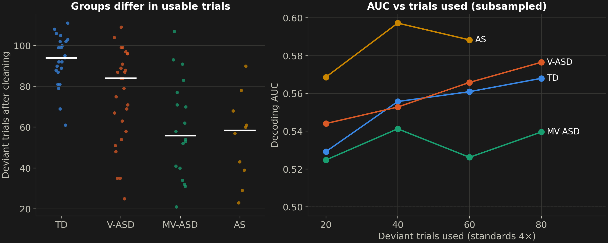
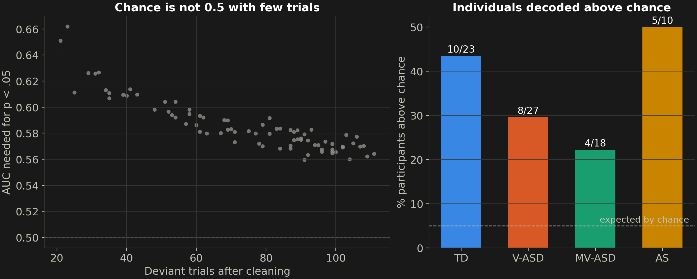
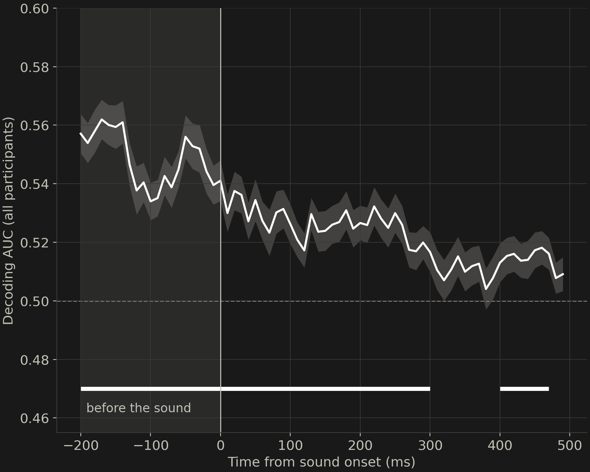
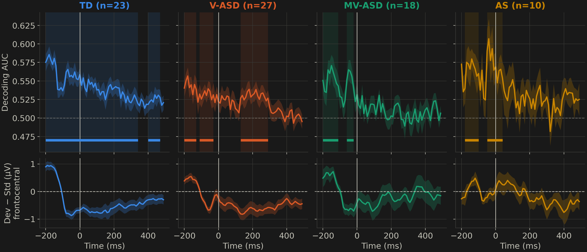

Caveats and Guidelines.
University of Southern California
2026-10-08

Single trials
channels × time
→
Classifier
linear, regularized
→
Cross-validation
train ≠ test trials
→
Score
chance = 0.5
Every trial is tested once, by a model that never saw it. Each test block: ≤ 24 deviants (120 ÷ 5); after 5-trial averaging, ≤ 5.
| Group | People | Recordings | Analyzed |
|---|---|---|---|
| Typically developing | 23 | 23 | 23 |
| Verbal ASD | 27 | 27 | 27 |
| Minimally verbal ASD | 21 | 22 | 18 |
| Angelman syndrome | 11 | 15 | 10 |
| Total | 82 | 87 | 78 |
Depends on the question
What we did

One dot per person.


Original pipeline: 5-trial averages built before cross-validation. One dot per recording.



| TD | V-ASD | MV-ASD | AS | |
|---|---|---|---|---|
| Participants | 23 | 27 | 18 | 10 |
| Single-trial AUC | 0.57 | 0.57 | 0.54 | 0.59 |
| Above chance (group) | ✓ | ✓ | ✓ | ✓ |
| Individuals above chance | 10/23 | 8/27 | 4/18 | 5/10 |
| Pseudo-trial AUC (k = 5) | 0.63 | 0.64 | 0.60 | 0.66 |
Groups did not differ (p = .16). Decoding is also above chance before sound onset; see backup.


Bars: clusters above chance (one-sided cluster permutation). In MV-ASD and AS, significant clusters are only before onset. The difference wave turns negative near −100 ms.
| Check (8 participants) | Pre-stimulus AUC | 100–300 ms AUC |
|---|---|---|
| Real labels | 0.556 | 0.525 |
| Label-shuffle null (20 per person) | 0.501 ± 0.010 | 0.505 ± 0.012 |
| No smearing (10 ms bins) | 0.556 | 0.526 |
| Standards after a deviant removed | 0.558 | 0.536 |
| Standards matched on sequence position | 0.554 | 0.541 |
| Component | Re-analysis |
|---|---|
| Epochs | −200–500 ms; 150 µV rejection; average reference |
| Features | 0–500 ms in 10 ms bins (100 Hz), all channels |
| Model | Scaler + L2 logistic, class-weighted (C = 0.001; per-bin C = 1) |
| Evaluation | Repeated 5 × 5-fold CV; AUC and balanced accuracy |
| Individuals | 200-permutation test per participant |
| Averaging | Pseudo-trials within train and test folds, k = 1–10 |
| Sample | One session per person; ≥ 20 usable deviants |
Bayet, L., et al. (2020). Temporal dynamics of visual representations in the infant brain. Developmental Cognitive Neuroscience, 45, 100860.
Grootswagers, T., Wardle, S. G., & Carlson, T. A. (2017). Decoding dynamic brain patterns from evoked responses. Journal of Cognitive Neuroscience, 29(4), 677–697. doi:10.1162/jocn_a_01068
Gwilliams, L., King, J.-R., Marantz, A., & Poeppel, D. (2022). Neural dynamics of phoneme sequences reveal position-invariant code for content and order. Nature Communications, 13, 6606.
van Driel, J., Olivers, C. N. L., & Fahrenfort, J. J. (2021). High-pass filtering artifacts in multivariate classification of neural time series data. Journal of Neuroscience Methods, 352, 109080.
Varoquaux, G., et al. (2017). Assessing and tuning brain decoders: Cross-validation, caveats, and guidelines. NeuroImage, 145, 166–179. doi:10.1016/j.neuroimage.2016.10.038
Decoding brain activity From EEG in Neurodevelopmental Populations